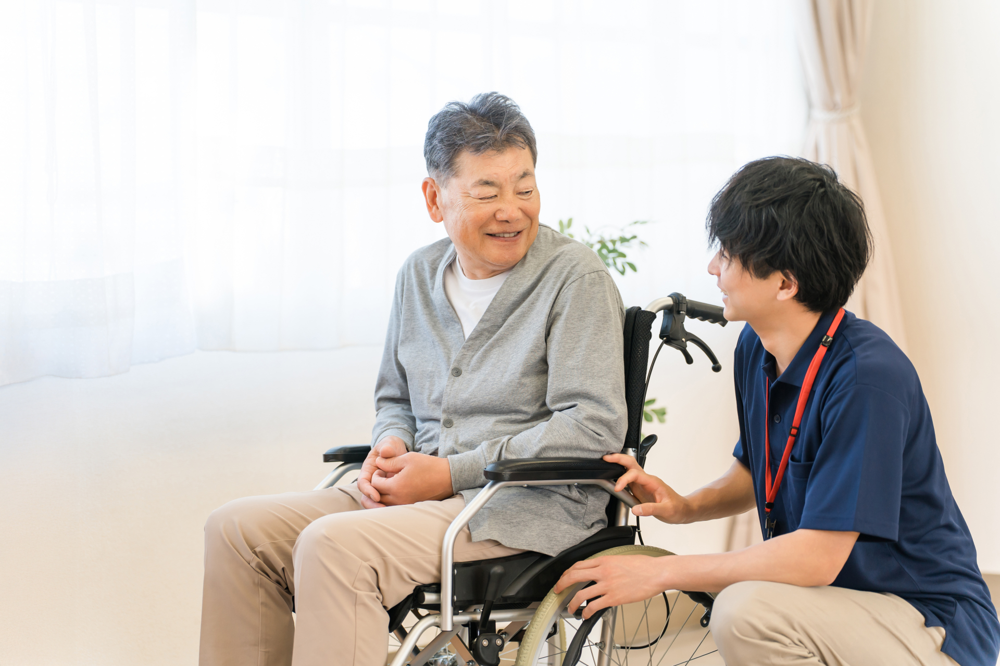
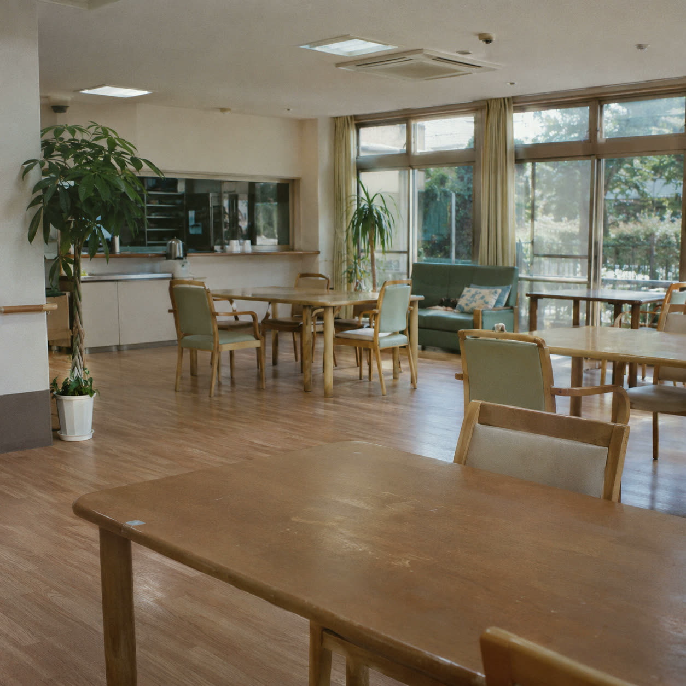

JOIN US IN MIHARU
見学の申し込み
決めるのは
見てからで大丈夫です
施設を見学する（約60分・私服可・履歴書なし）
電話でも受け付けています
採用担当（相談員）／平日 9:00〜17:00
000-000-0000
サンプルのため、つながりません。
みはる市ひばりが丘／特別養護老人ホーム・デイサービス
MY CARE
BEGINS IN MIHARU
介護の仕事に興味はあるけれど、自分にできるかが分からない。そこから始めた人が、いまここで働いています。


掲載の写真は、この見本のために生成した画像です。本番ではお客様の施設で撮影した実写が入ります
はじめる前に、みんなが止まるところ
この3つが気になって
応募ボタンを押せずにいませんか
未経験で入って
怒られ続けるのが怖い
28歳・飲食店から転職を考えている方
腰を壊して辞めた人の話ばかり聞く
34歳・介護職の友人がいる方
給料が上がらないまま
年を取りそう
41歳・家族を養いながら転職を考えている方
こもれび野会の答え
3つとも
うちの仕組みで答えます
新人1人に対して先輩職員を1人決め、同じシフトで3か月間いっしょに動きます。分からないことをその場で聞ける相手が、必ず決まっている状態からはじめます。42名という規模だからできるやり方です。
全居室に移乗用リフトとスライディングボードを入れており、持ち上げる介助は原則ありません。夜勤に入るかどうかは入職時に選べて、あとから変えることもできます。
介護職員初任者研修・実務者研修・介護福祉士の受験対策まで、受講料は法人が全額負担します。資格を取ると手当が付き、勤務時間内に研修へ行けます。
6割
いま働いている職員のうち
介護がはじめてだった人の割合
2026年11月時点・職員42名のうち25名（サンプルの数字です）
数字で見るこもれび野会
先に全部
お見せします
設立
1998年 みはる市で特別養護老人ホームを開設
職員数
42名 うち介護職27名・看護職5名・相談員3名
利用者の定員
特養60名／デイサービス25名
平均勤続年数
8.4年 直近3年の離職は2名
有給の取得率
78% 2025年度の実績
育休から戻った人
5名／5名 直近5年で取得した全員が復帰
夜勤の回数
月4〜5回 夜勤なしの働き方も選べます
日勤のある1日（特別養護老人ホーム・介護職）
何時に何をするのか
先に知っておいてください
8:30
出勤と申し送り
夜勤の職員から、昨夜の様子を聞きます。体調の変化があった方は全員で共有します。
9:00
起床と朝の支度のお手伝い
洗顔・着替え・整容。リフトを使う方は2人で対応します。はじめのうちは先輩と一緒に入ります。
11:30
昼食の準備と食事のお手伝い
刻み・とろみなど、その方に合わせた形で出します。食べる速さに合わせて見守ります。
13:00
休憩（60分）
休憩室で交代して取ります。持ち込みのお弁当でも、近くのコンビニでもかまいません。
14:00
入浴の介助とレクリエーション
入浴は週2回。曜日ごとに担当が変わります。レクは職員が持ち回りで内容を決めます。
16:30
記録を書いて、夜勤へ申し送り
記録はタブレットで入力します。手書きはありません。
17:30
退勤
残業は月平均3.2時間。記録が終わらないときは早番の時間内で片づけます。
14時ごろの食堂。レクリエーションのない日は、こんな時間が流れています
はたらく人
3人とも
介護はここが最初でした
本番では、ここに職員お一人ずつの実写と、ご本人の言葉が入ります。以下の写真と文章は、構成をご覧いただくために用意した架空の内容です。
最初の3か月は
先輩の後ろにずっといました
何も分からないまま現場に出されるのが怖かったのですが、3か月は決まった先輩と同じシフトでした。聞くたびに手を止めてくれたので、質問するのが怖くなくなりました。
子どもの行事で
休めるかどうかが全部でした
シフトは前の月の15日までに希望を出します。学校行事の日は、ほぼそのまま通ります。育休から戻ってきた人が何人もいるので、頼みやすい空気があります。
45歳で資格なしでも
遅くはなかったです
週3日のパートで入って、働きながら初任者研修を取りました。費用は法人が出してくれます。いまは常勤で、来年に実務者研修を受ける予定です。
募集要項（介護スタッフ・正社員）
給与と休日は
ここに全部書いてあります
| 雇用形態 | 正社員（パート・アルバイトも同時募集／週2日・1日4時間から） |
|---|---|
| 勤務地 | 特別養護老人ホーム こもれび野（みはる市ひばりが丘2-14-1） デイサービスセンター こもれび野（同敷地内） |
| 月給 | 198,000円〜265,000円 内訳：基本給168,000円〜／処遇改善手当20,000円〜／夜勤手当1回8,000円（月4〜5回） |
| 資格手当 | 介護福祉士 15,000円／実務者研修 8,000円／初任者研修 5,000円（いずれも月額） |
| 賞与 | 年2回・前年度実績 計3.8か月分 |
| 昇給 | 年1回。直近3年の平均は月額4,200円 |
| 休日 | 月9〜10日のシフト制（4週8休以上）／年末年始5日／有給は入職6か月後に10日 |
| 勤務時間 | 早番7:00-16:00／日勤8:30-17:30／遅番11:00-20:00／夜勤16:30-翌9:30（休憩2時間） 夜勤に入らない働き方も選べます |
| 残業 | 月平均3.2時間（2025年度・介護職の実績） |
| 応募資格 | 資格・経験は問いません。普通自動車免許（AT限定可）があると送迎にも入れます |
| 研修費用 | 初任者研修・実務者研修・介護福祉士受験対策は法人が全額負担（勤務時間内に受講可） |
| 保険 | 健康保険・厚生年金・雇用保険・労災保険 |
記載の金額・実績はすべてサンプルです。本番ではお客様からいただいた数字をそのまま掲載します。
見学の流れ
応募の前に
1時間だけ見に来てください
履歴書はいりません。私服で大丈夫です。見学したからといって応募をお願いすることはありません。合わないと思われたら、その場で終わりにしていただいて構いません。
01
申し込み（1分）
下のフォームかLINEで、希望の曜日と時間帯をお送りください。
02
日程のご連絡（2営業日以内）
採用担当の相談員からご連絡します。平日の10時から16時のあいだで調整します。
03
当日（約60分）
施設の中をご案内し、働いている職員2人と話していただきます。質問はいくつでもどうぞ。
04
持ち帰って考える
その場で決めなくて大丈夫です。応募されるときだけ、改めてご連絡ください。
よくある質問
聞きにくいことから
先に答えます
見学の申し込み
決めるのは
見てからで大丈夫です
施設を見学する（約60分・私服可・履歴書なし）
電話でも受け付けています
採用担当（相談員）／平日 9:00〜17:00
000-000-0000
サンプルのため、つながりません。